[ Home ] [ Travel ] [ Photography ] [ Pets ] [ Games] [ Rowing] [ Physics ]


Cruising on the Anthem of the Seas
Travel
Cruises
Past Cruises (Diaries)
Future Cruises
Rogues Galleries
Land Trips
Diaries (Land Trips)
Hawai'i - Big Island - 04'01
Hawai'i - Maui - 05'02
Hawai'i - Big Island - 04'03
Hawai'i - Kaua'i - 09'04
Hawai'i - Big Island - 04'06
Hawai'i - Maui - 04'06
Mainland China - 05'07
Phoenix, Arizona - 12'07
Greek Isles - 05'08
Hawai'i - Kaua'i - 09'08
Hawai'i - Big Island - 09'09
Hawai'i - Maui - 05'12
Hawai'i - Big Island - 04'13
Ireland - 08'13
Mexico - Cancun 11'13
France/Belgium/Lux 07'15
Hawai'i - Big Island - 05'17
England / Wales - 06'17
Hawai'i - Big Island - 09'19
Photography
Cameras
Underwater
Pets
Tara
Blackie
Whitey
Muffy
Ollie
Rusty
Fluffy
Rufus&Dufus
Games
Rowing
Physics
Rating (out of 5):
Ship  Food
Service
Itinerary
Food
Service
Itinerary 
After taking a year off of cruising to sell our old house and build a new one, it was time to re-enter the cruise world and have a bit of a getaway. We had long been fascinated by the Quantum Class ships, but most of their itineraries were in Asia. The Anthem did the Caribbean from Cape Liberty, but featured four sea days in cool waters. Then we spotted the Canada / New England itineraries that looked ideal. We picked the October sailing because of the timing. By chance the ports included Boston (Marjorie had never been there) and Bar Harbor (which we had missed on an earlier cruise thanks to Hurricane Sandy). As it turned out, the timing and weather worked perfectly making it a wonderful cruise.
The timing was great for us . The autumn colors were at their peak, although in general it was a poor year due to the warm weather earlier. There were very few kids on this cruise - only 19 out of 4137 pax (double occupancy is 4180). As you can see the ship wasn't quite full. Lastly we were the final cruise ship for the year in several ports so a lot of the souvenir shops were 1/2 price or better.
Because of our cruise status with Celebrity (Elite Plus), RCCL gives us the equivalent status (Diamond). They keep screwing around with the benefits. This cruise instead of free laundry we got $10 off for one bag. Our internet benefit was one free 24 hour period. Finally there is still the Diamond Lounge (4:30 to 8:00) for unlimited free drinks, plus 3 drink vouchers encoded on our seapass cards. As usual, we grabbed our free drinks from a bar and carried them into the dining room.
I should mention the cruise activities that we did before the cruise. Although we had "anytime dining", it was recommended to reserve each night. So I booked us for 5:30 every night. For some reason once we got to the MDR they wanted to put all people who asked to share at tables for 8 or 10. We learned that if you begged they would grudgingly put you at a table for 6 (our favorite). Marjorie also booked most of our entertainment online before the cruise so that we were guaranteed a seat in the theatre each night.
We assumed that the Anthem would be a morph between the Freedom Class and the Oasis Class, but were surprised to find that it had it's own unique features not found on any other class. The main differenciating features we noticed are:
The Anthem doesn't have a multi-level main dining room, but rather splits it up into multiple single storey rooms, much like Princess does. We kind of missed sitting on a mezzanine looking down on to the lower floors of the dining room.
There is no concept of the interior five storey promenade. Instead the fabulous open space has been shrunk down to a two storey atrium meaning no themed parade and no parked vintage car!
The ice skating rink (Studio B) is gone, replaced by a "music hall" dance floor, bar and trivia lounge. We always enjoyed the ice shows. For the kids who enjoyed the "public skating sessions", the top deck basketball court is periodically configured for roller skating.
Speaking of the basketball court, it must be the largest one at sea. It's huge. At times it is reconfigured for bumper cars or trapeze lessons. The bumper cars are battery operated (so no electrified ceiling) and travel fast enough for some satisfying crunches. There are about 15 cars on the floor at once so lots of opportunity to jolt your fellow passengers. The trapeze sessions allow 10 concurrent passengers to enjoy a half hour training session complete with flying trapezes and body harnesses. Too much for me!
At the back of the ship, complementing the flow rider, is an iFly setup. It is a skydiving simulator that allows you to fly up and down in a transparent tube supported on a blast of air. The force of the air is significant judging by the facial distortion it causes. I didn't try it but others seemed to really enjoy it.
Mid ship on the upper deck is a glass cage on a stick (called the North Star) that takes 14 pax at a time into outer space (well, actually 300 feet above the ocean). This was not too stressful looking so Marjorie and I were elevated two or three times during the course of the cruise. The view from the capsule was awesome, especially when in port. Each passenger was allowed only one booking per cruise, but we managed to beg our way into some extra sessions.
Pre-cruise, Day 1 (Oct 17, 18) - Overnight in New Jersey, then Boarding
We drove up to C&M's at 1:30 PM to drop off our car and beg a ride to the airport. We picked up a Subway sandwich for the flight on the way. Chrissy and Lincoln got us to the airport by 2:00 and we said goodbye. What a great time to check in! The airport was empty! We breezed through U.S. customs and then security. We were to the waiting room by 2:10. We had a 4:00 PM direct flight to Newark (EWR) which was ontime. It was 10:00 when we arrived at EWR. After picking up our luggage we registered with a Royal Caribbean rep for the following day's shuttle to the cruise dock. She was very nice and booked us on a special bus directly from our hotel. By absolute fluke, Marjorie had booked us into the same airport hotel that the cruise line was using. No need for us to return to the airport. We had to take an interterminal train to the hotel pickup point and wait a while for the shuttle to arrive. Once we got to the Rennaisance Hotel, we checked in and hit the sack.
The next day we were up by 8:00. The hotel had a free breakfast. We were scheduled for the
11:00 bus to the cruise dock. so lazed around for a while. Once on the bus the traffic
was very slow and we finally reached the dock around 1:00. We checked in to
the ship, dropped off our carry-on, and grabbed some lunch. Back in the cabin
there was a bottle of champagne awaiting us. We unpacked our newly arrived bags.
The cabin turned out to have loads of cupboard and drawer space - more than we could use!
Muster was at 3:30 and we set sail at 4:00. Just out of the dock area we sailed under the
Verrazzano Narrows Bridge. For dinner I had prime rib - always a great
boarding day choice. During dinner the captain announced that we were turning around to
return to Cape Liberty because of a medical emergency. We had a day and a half to our first
port (Boston) and were chugging along at 10 knots so this event would not hurt our schedule.
For entertainment they were showing an orchestral concert on a 105 foot digital screen.
The orchestra looked very lifelike, almost 3-D, and the music was American Classical
(Copeland, Gershwin, Williams, Bernstein, etc), but a little too loud to be realistic. Amazing.
Then to bed.
Day 2 (Oct 19) - Our first day at sea
We slept in and arose about 9:00. Jet lag! We had a quick bite to eat and
then headed to the 10:00 AM Cruise Critic get together. Nothing too exciting, but Marjorie
did win a bottle of red wine. We much prefer white wine, and by fluke a guy won a bottle of
white and he immediately ask us if we wanted to swap. Woohoo! At 11:00 we sat in on an
introductory variety show, followed by lunch at the MDR. I had one of those wonderful
Royal Caribbean's salad bowls stuffed with my favorite ingredients. After lunch we wandered
the ship for a while. At 3:00 there was a future cruises presentation and at 4:00 we had our
reservation for the North Star elevator ride. The view of the ship below was awesome.
It was dress-up night tonight, so I donned my tie and sweater. RCI no longer enforces
the code and one couple at our table were wearing jeans and t-shirts. I consoled myself
by eating a bowl of seafood linguini. After dinner we attended a production called "Spectra's
Cabaret". The story escaped me and it was attrociously loud. However, my free Diamond Club
Bailey's was wonderful. Then it was off to bed.
Day 3 (Oct 20) - A day in Boston
We woke up around 7:30 to find ourselves in Boston. It was cloudy and about 10 degrees.
We did breakfast in the MDR where I had my usual omelet. After breakfast we left the ship to
wander around the dock area. We walked along the edge of downtown and visited the
World Trade Center building. The harbor area was quite interesting and nicely modernized.
We were back on the ship for lunch which we had in the buffet area. It was very quiet on the
ship with most folks dining off of the ship. At 1:00 we did our first trivia - just Marjorie and I on
the team. It was a geography trivia and we had to identify photos of famous landmarks.
We had visited almost all of them and ended up winning beautiful RCI pens. At 2:30 we
headed out onto the dock to meet our 2 hour bus tour of Boston. We drove around the city and
the guide pointed out the famous areas and buildings. The tour was supposed to include
Cambridge (M.I.T.), but the bridge was closed due to the "Head of the Charles" rowing race.
Darn rowers!! We stopped at Copley Square in front of the Trinity Church and there was a huge
political protest going on. I think it was "Black lives matter" or something similar. We also
stopped at the old Massachusetts State Legislature building. Back on the ship it was
time for dinner. I had short ribs that were excellent. The evenng show at 8:00 was a musical
song and dance production ("The Gift") with proprietary music and lyrics, so we didn't
know any of the music. The sound was very loud (my constant complaint) and neither I
nor Marjorie could follow any trace of a story. With our ears ringing, we wandered the ship
for a bit and then headed for bed.
| 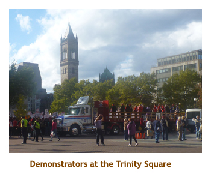 | 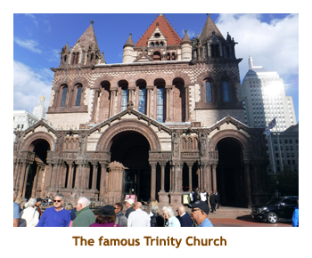 |
Day 4 (Oct 21) - Visiting the city of Portland
We woke up today in Portland, in Maine not Oregon.It was about 7:30. We headed down
to the MDR for breakfast.We enjoyed our MDR breakfasts and met lots of new people. We
had been to Portland previously and had walked all around the town. This time we did a
shorter walk closer to the ship. It was 7 degrees out and cloudy. We stopped into a cheese
shop were Marjorie bought some Cabot cheese. We were back to the ship about 12:00 and
had a quick lunch in the buffet. Once again most folks were onshore, so lunch was not a zoo.
1:00 PM trivia was geographic again, so Marjorie and I (and two funny ladies who joined us)
won once more (woohoo, RCI highlighters). That was to be the last win of the cruise for us!
Afterwards I read my book and wandered the decks while Marjorie headed back ashore
to look for a drug store. She also popped into Portland Brewery and brought me back a
couple of bottles of local beer. For dinner tonight I had shrimp scampi. By this time we had dined
with a family of 4 (grand parents, daughter-in-law and grandchild) a couple of days and
really got along well with them. We agreed to meet each night at
5:30 at our usual table for the rest of the cruise. Sounds like traditional dining, eh?
Tonight's entertainment was three tenors from Las Vegas who called themselves
"The Las Vegas Tenors". Inventive, eh? They were very good and sang a range of
classical, pop and even country. Once again the sound was a bit loud, but I was getting
used to it (called progressive deafening).
Day 5 (Oct 22) - Beautiful Bar Harbor
We woke up at 7:00 to a beautiful sunny day. We were arriving at Bar Harbor, a port
that we had missed before thanks to Hurricane Sandy. We ate breakfast in the buffet and
hustled off the ship to our 9:30 tour. This was a tendering site so we needed lots of time
to get to shore. Once ashore, the tour people took our tickets and hustled us to one of the buses.
We were seated and happy when the tour guide boarded and described our 6 hour tour including
a lobster lunch. What? We were on the wrong bus. Fortunately our real bus had not left yet, so we
were able to board for our 2 hour morning tour (without lobster).We were driven through the tiny
town (pop. about 5,000) and the important homes and sights were pointed out. Then we drove
up Cadillac Mountain for a wonderful view of the island and the ocean. Bar Harbor is located
on an island that is mostly deciduous forest. Although it was sunny, the temperature was about
zero degrees and it was windy. We saw more stately homes as we drove back to Bar Harbor.
We were dropped off near the tender dock but decided to have lunch in town. We did our own
walking tour of the town and then had a wonderful lobster roll at the West Side Restaurant.
Then we walked some more to the town library which turned out to be closed Mondays
(ie. today)! Next door was a hotel so Marjorie begged some internet time. Then we tendered
back to the ship by 1:30. We read for a while and then did afternoon trivia. For dinner I had the
cod loin. The entertainment was a magician who did some very unusual tricks. Quite good.
Then to bed.
| 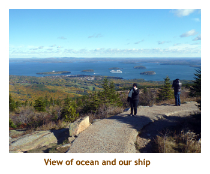 | 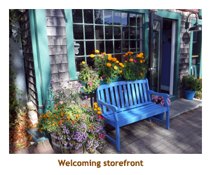 | 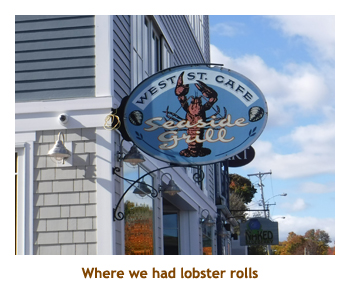 | |
| 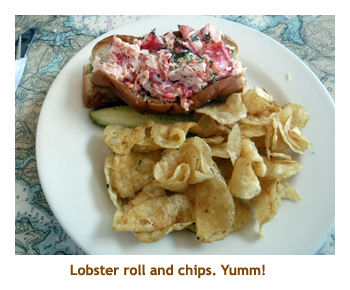 | 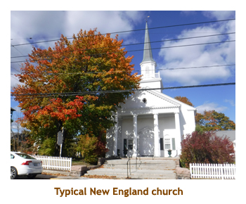 | 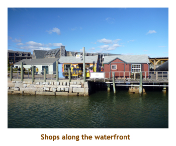 |
Day 6 (Oct 23) - A return to Halifax
We were up at 7:30, arising to a beautiful sunny day in Halifax. This was our third visit here so we
decided to just have a relaxing day on our own. We had breakfast in the MDR. Afterwards
I did some reading while Marjorie hopped off the ship and went shopping at the nearby Superstore.
She wandered around the surrounding dock and then came back aboard in time
for a second excursion on the North Star at 10:00. It was quite a different experience while in port
as you could see out over the city. Afterwards we had lunch in the buffet. Once again most of the
passengers were ashore so the usual food zoo was replaced by a quiet and relaxing
buffet. Then it was time for a walk on the waterfront.
We walked quite a ways along the new harbourfront - a wonderful collection of renovated dock
buildings now transformed into restaurants, boutiques, etc. The wooden walkways take you right
along the waterfront. We returned to the ship late afternoon. We relaxed for the rest of the day
wandering the ship, reading and attending trivia. For dinner
I had pork tenderloin medalions. Excellent! There was no entertainment that appealed to us so we
strolled the public areas for a bit and then went to bed.
| 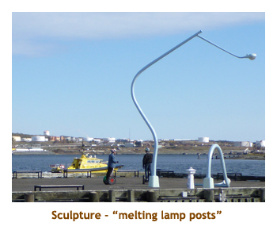 | 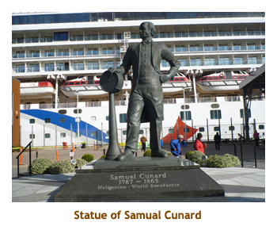 | 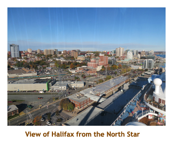 |
Day 7 (Oct 24) - A second day at sea
We woke up about 8:00 to a sunny day at sea. As we were kind of late, we did breakfast
in the buffet and then hustled to a future cruises presentation. Afterwards we wandered and
read - two of our favorite onboard activities. We did a leisurely lunch in the MDR. I had a
wonderful "everything in it" salad and a lobster roll. The roll was good, but not as good as
the ones on shore. Unable to think of anything different, we resorted to wandering and
reading again. At 2:30 we were booked for a two hour Rock and Roll production in the
main theatre. It was pretty good with a few songs that we knew and the story line was
simple enough for us to follow. Then it was time to get ready for formal night. Once again I
defaulted to a tie and light sweater. Formal enough for me! As usual on the second formal
night they served lobster in the MDR. It was very good. Later we attempted the music
trivia. The people we sat with knew a lot about the music period (70's and 80's) saving
us the embarrassment of last place. Then we wandered and went to bed.
Day 8 (Oct 25) - St. John, New Brunswick
Today we were up at 8:00 ready for our visit to St. John. On an earlier cruise we did
a one day visit here which was stretched to two days thanks to Hurricane Sandy. As a
result we felt that this time we would just walk around the city on our own. Besides, we weren't
due to dock until 12:00 noon, so we were having a morning at sea. We had breakfast in the MDR.
Our treat for the day was to try the bumper cars in the "SeaPlex". The area opened at 9:00 so
we were there early by 20 minutes to watch them set up and to get a good spot in the lineup. It
turned out there were only 6 or 7 of us and so they started about 10 minutes early.
(There were 15 bumper cars in total). We got a really
long ride until a few more people showed up to fill up the rest of the cars. A couple of people
called it quits while the rest of us did another tour of duty. Great fun! We followed the cars with
a round of trivia. We did not so well, so I figured the bumper cars had knocked the sense out of us.
Then came the announcement as we came in sight of the entranceway to St. John. The wind
had picked up and the Captain was too chicken to try entering the harbour. So, the rest of
today became a day at sea. At least this time we were missing a port that we had done before,
so we were happy just to have a day at sea.We had lunch in the MDR while the staff scrambled
to put out a new "Daily Planner" with onboard activities for the afternoon. We were happy just
to wander, shop and read. For dinner I had rack of lamb which was very good. Afterwards we
did Beatles Trivia wiith another couple and did quite well. It's all in how you pick the team!
Then we wandered and went to bed.
Day 9 (Oct 26) - Another planned sea day
We awoke at 8:00 AM to our third sea day in a row.and our final full day of the cruise. It was a
do nothing day of the cruise - not much happening inside and too cool to stay outside for long.
We had a leisurely breakfast in the MDR. We had discovered fruit smoothies in the buffet, so
whenever we were eating breakfast in the MDR we picked up a smoothie first and carried it with us
into the MDR. Trivia was at 10:00 and we did one of our usual "not quite good enough" finishes.
Over the cruise we met so many great people at trivia, not really forming any permanent team
for the cruise. We were sporadic attendees, so maybe that was for the best. I think
this was the day that Marjorie headed up to the North Star arm and, finding only 6 or 7 people there
for the next load (it holds 14), enveigled yet another ride in the sky. After
reading and lazing about we had lunch in the MDR. I was really enjoying the fabulous salad
bar - many types of vegetables, several cheeses, bacon, chicken, shrimp, and a
big choice of dressings.
We did a future cruises presentation and then wandered around the ship. For dinner I had
roast turkey. It seems like most of the cruise lines serve turkey on the final night of the cruise. We
returned to our room to do our final packing and put our suitcases out into the hallway. I always find
that it is eaiest to put on tomorrow's clothes and then pack everything else. Then it was
time for bed.
| 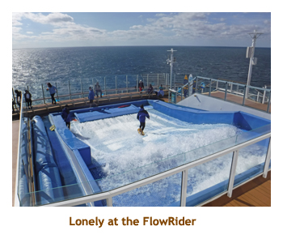 | 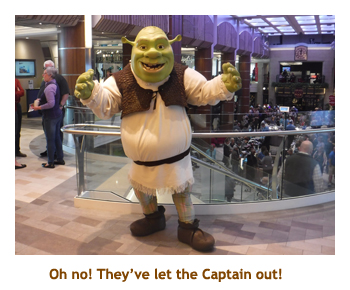 | 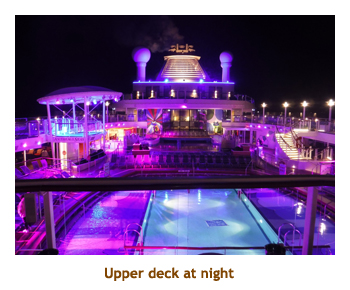 |
Day 10 (Oct 27) - Bayonne, NJ and the trip home
Finally it was departure zoo day. We had an RCI airport transfer with a departure time of 7:45. So we were up
at 6:00 and had a quick bite to eat from the buffet. We vacated our cabin and headed to our designated departure
lounge. Our cattle call was just a few minutes late and we headed down the ramp to the suitcase claim area.
There was a bit of a lineup leaving the terminal building but we were soon on the bus bound for the airport.
Unlike our flight down to New Jersey which was direct from Calgary, our return flight connected through Toronto.
We arrived at the airport about 9:00 and our first lef flight wasn't until 2:30. Marjorie pleaded with the checkin lady and
scored us earlier seats on an 11:30 flight. We arrived in Toronto about 1:00 with lots of time for our next leg at 6:30.
Marjorie tried to pull up our second leg to YYC, but it couldn't be done due to our already checked luggage.
We had hamburgers at the Mill Street Pub and then twiddled the afternoon away awaiting our YYC flight. We were
about an hour late leaving as the plane arrived late and then had to be de-iced. We arrived in Calgary about 9:00
and Christina and Matt were there to pick us up. We drove to their place and transfered our bags to our car. We
were home by 11:00 or so. The kitties were fine and glad to see us. Overall it had been a wonderful cruise.